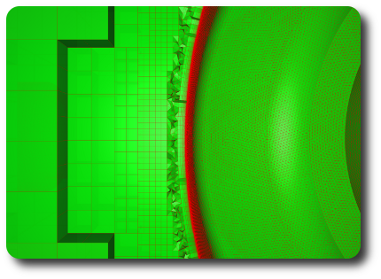
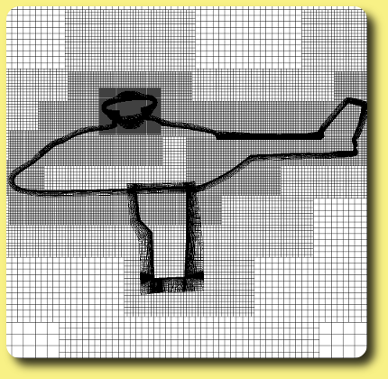
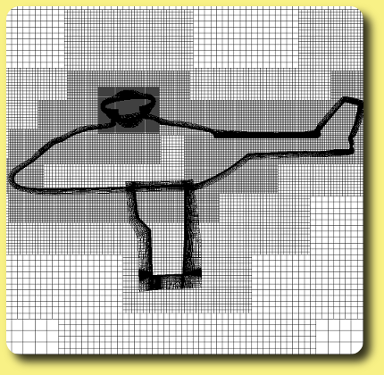
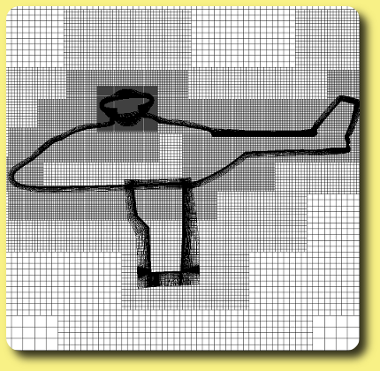

Generator : Automatic mesh generation with octrees
Octree based mesh generations.
Unstructured octree meshes (hexa+tetra+prims near bodies)
Octree mesh around a cat model by T. Renaud.

Octree mesh around a landgear model by T. Renaud.
Structured octree meshes

Unstructured (hexa) and Structured (patched grids) octree around a NH90 helicopter by S. Péron.
Initial structured octree and Q criteria for a helicopter fuselage by A. Le Pape.
Adapted structured octree and Q criteria for a helicopter fuselage by A. Le Pape.
Octree mesh and Q criterion iso-surface for a CROR by B. Rodriguez.
More:
Gallery
-
Get support
-
Tutorials
-
Download
-
Citation
-
Contribute
-
Reference documentation
-

 
